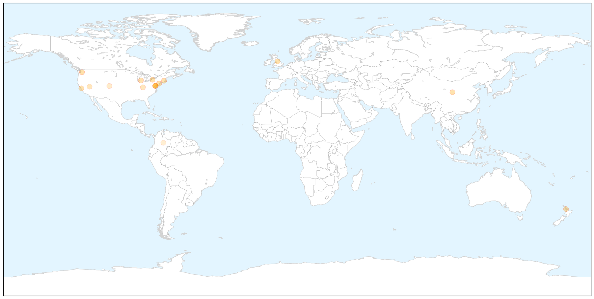

Toggle navigation
Early Warning
Return to Dashboard
Points of Interest
About the Project
Influenza
Sep 22, 2014
Compare to:
-
Dengue Fever
Hemmorhagic Fever
Mold/Fungal Infection
Meningitis
Pertussis / Whooping Cough
Middle East Respiratory Syndrome
Cholera
Hepatitis
Chikungunya
Yellow Fever
Bubonic Plague
West Nile Virus
Swine Flu
Ebola
Measles
Unknown
Mumps
30 Day Trends
Web: 8
alerts
, 1
warnings
Twitter: 2
alerts
, 0
warnings
Top Articles:
0.998
Health Officials Urge Flu Vaccination for All, Including Healthy Adults
0.995
Interview: Bacterial Meningitis and Other Important Vaccine News
0.994
It’s Not Just Ebola
0.992
Enterovirus D68 confirmed in King County
0.982
Health Department confirms enterovirus has hit WNY
0.965
Why do half of us still skip the yearly flu vaccine?
0.960
CDC tells healthy adults not to forget flu vaccine
0.949
Newly-detected bird flu in Southeast Asia poses threat to animal health, people's livelihoods
0.945
Subra confirms college students with ILI not under quarantine - Nation
0.940
Confirmed enterovirus cases in West Michigan
0.939
Immune response turned up, not down, by flu during pregnancy, Stanford/Packard study finds
0.903
These factors raise kids' risk for severe flu
0.902
Doctors warn about need of flu vaccine for pregnant women
0.783
Kentuckians Can Get Protection From Four Flu Strains This Fall
0.772
Employee vaccinations protect business profits during flu season
0.621
New lab incidents fuel fear, safety concerns in Congress
0.527
RheumReports: Swollen Ears and Enbrel
Top Tweets:
No tweets found for Sep 22, 2014
Web/News Articles
X
Tweets
X
Article Locations
X

Article Confidences
X